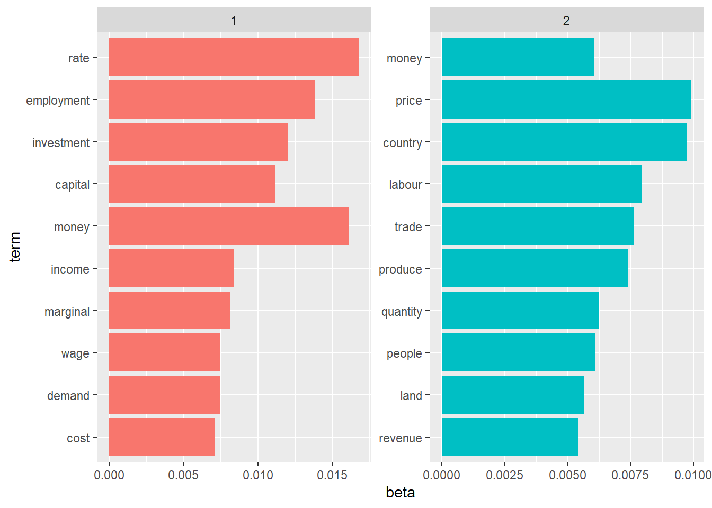

Adam Smith and John Keynes: A Textual Exploration with R
Muad Saleh

Introduction
Adam Smith’s The Wealth of Nations and John Keynes’s The General Theory of Employment, Interest, and Money are two influential works in the field of economics that have greatly shaped economic thought. These works, written in different time periods, present contrasting and evolving perspectives on various economic concepts. In this presentation, I aim to conduct a text analysis of these influential works using R. By comparing the ideas and topics put forth by Smith and Keynes, I seek to gain insights into their differing views on economic principles such as market dynamics, government intervention, employment, interest rates, and money supply.
The objective of this presentation is to highlight the contrasting viewpoints of Adam Smith and John Keynes regarding market dynamics and their implications for economic growth and development. I will only be focusing on their most famous works mentioned above. This analysis will contribute to a deeper understanding of the evolution of economic thought and its implications for contemporary economic theories and policies.
Methods
To compare the texts, I employed a text analysis approach using R, specifically leveraging the tidyverse ecosystem . In addition to many other packages, I utilized dplyr, tidyverse, ggplot2, and wordcloud to clean, analyze and visualize the textual data. This included steps such as tokenization, removing stop words, and frequency analysis. Next, I employed sentiment analysis to understand the overall tone and polarity of the texts. Additionally, I utilized topic modeling techniques, such as Latent Dirichlet Allocation (LDA), to discover and compare the main themes and concepts addressed by Smith and Keynes in their respective works.
Frequency Analysis
After tidying, tokenizing, and removing stop words from the text, below are the top 25 most frequently used words in The Wealth of Nations. Not surprisingly, during the period the book was published in 1776, the industrial revolution had barely started, so words like “stock”,” corn”, “land” and “produce” properly reflected what still dominated the economy at the time. Also, the word “price” is the most used word in the book since it is discussed by Smith in the context of supply, demand, competition, scarcity, and allocating resources, which are basically the major themes in the book. Another major theme in the book is the division of labor and how that saves time and increases productivity. That is why if we look again, we see that the word “labour” and “time” rank as the 3rd and 13th most frequently used words in the book, respectively.
Below are the top 25 most frequently used words in The General Theory of Employment, Interest, and Money. We can see that compared to the previous book, we see new words like “rate”, “marginal”, and “investment”. The word “rate” refers to interest rate and it is ranked as the most used word in the book. It is extensively used in the book in the context of macro-economic theory, which is essentially the branch of economics that the book revolutionized. The word “marginal” refers to the incremental change in utility, efficiency, productivity, cost, etc. This reflects how the field of economics had changed since Smith’s period (1776 to 1936) and became a bit more complex and technical. We can also infer a change in the period between the two books by looking at the word I mentioned earlier, “investment”, which refers to investing in equipment, machinery, infrastructure, etc. This reflects the economy at the time the book was published, in 1936, decades after the industrial revolution had already taken place.
The term frequency (tf) statistic measures the relative frequency of a term in a document. The inverse document frequency statistic (idf) measures the weight of commonly used words in a document. Multiplied together, we get a term’s tf-idf, which measures how important a term is in a collection of documents.
Sentiment Analysis
Using the wordcloud package, we can again visualize the most common words in The Wealth of Nations, but this time including sentiment. The size of the word indicates how commonly it is used, and its color indicates whether it is positive or negative.
Below I did a similar thing with The General Theory of Employment, Interest, and Money, but instead of visualizing it using a wordcloud, I used a horizontal bar chart. Again, the length of the bar indicates how commonly the word is used, and the color indicates whether it is positive or negative.
Correlation
Words from The General Theory of Employment, Interest, and Money that were most correlated with “capital”, “demand”, “cost”, and “economics”. For example, the word “pigou” is correlated with the word “economics” because Keynes heavily mentions Arthur Pigou, an economist and a critic of many of Keynes’s theories.
Below are pairs of words in The Wealth of Nations that show at least a 0.40 correlation of appearing within the same 10-line section. As expected, we find a correlation between words like “clergy” and “church”, “bushel” and “wheat”, and “paper” and “circulation”.
Topic Modeling
Using the LDA() function from the topicmodels package, we can create a two-topic LDA model for both books mixed together. In combination with the ggplot2 package, I visualized the most common 10 words within topic 1 and topic 2. We can see that the probabilities of each term belonging to a certain topic is fairly accurate. If we compare both topics with what we did earlier in the frequency analysis section, we can quickly tell that topic 1 corresponds with The General Theory of Employment, Interest, and Money while topic 2 corresponds with The Wealth of Nations. This method works better with a much larger number of books, nonetheless, it is still provided us with some insights.
 Based on a log ratio of the two topics, below are the words with the greatest differences in beta between topic 2 and topic 1.
Conclusion
Smith’s work is a mixture of economics, history, and international issues. On the other hand, Keynes’s work is mainly macro-economic theory. Smith advocated for free markets and minimal government intervention which formed the basis of classical economics. Keynes advocated for government intervention when needed. Though not mutually exclusive to each, Smith’s work was more on long-term economic growth, while Keynes focused more on short-term economic fluctuations.